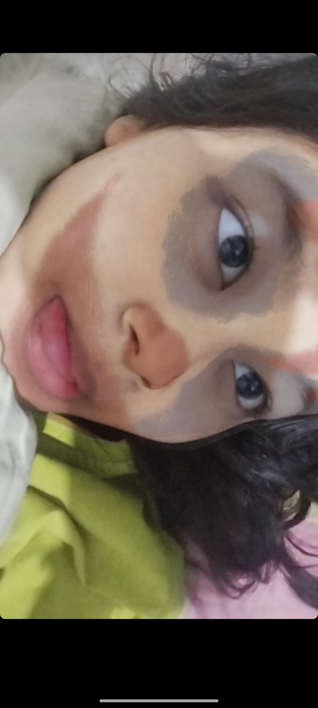

HALLOOWWWW DUNIAAAKUUU SAYANGGNYA AKUUUU CANTIKNYAAA AKUUUUU
iyaaaa siapa lagi kalau bukan kamuuu
Annisa Aurelia Mauludin
Aku cuma mau ngomong kalau aku sayanggg banget sama kamuuuu, maaf yaaa
kalau aku masih sering membuat kamu menangis dan masih sering mengatur-ngatur
yang mungkin membuat kamu tidak nyaman, tapiiii kita tidak akan menyerah satu sama lain bukan?
YEAYYYYYYYY AKU BANGGAAAAA BANGET PUNYA KAMU, aku harap kita bisa bersama selamanyaaaaa.
I LOVEEE YOUUUUUUU SAYANGGGGGGG ❤️

Why yhh setiap mendengar suara kamu, liat foto kamu, kamu on cam, dan lain lain aku makin jatuh cinta >//<